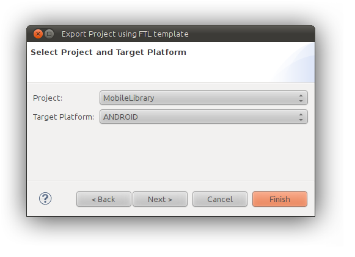
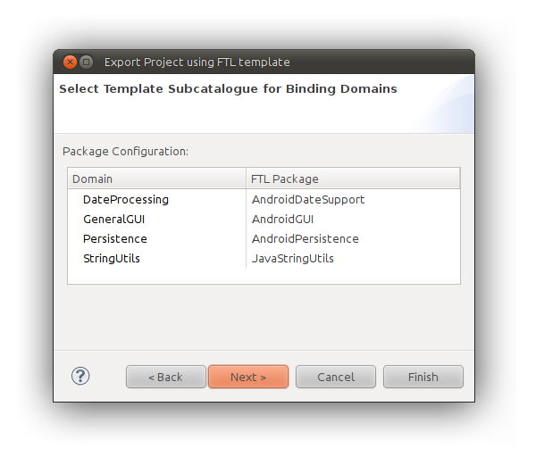
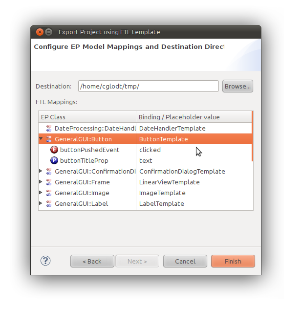
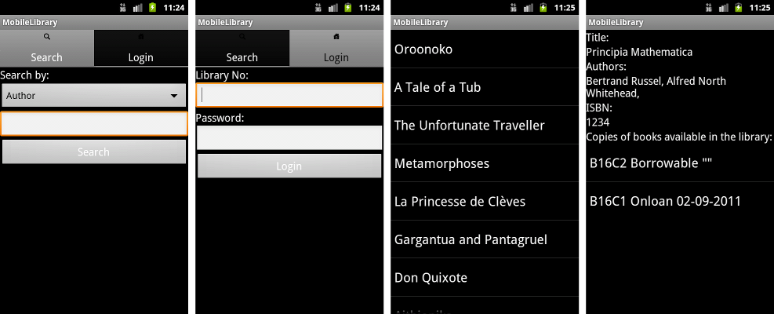
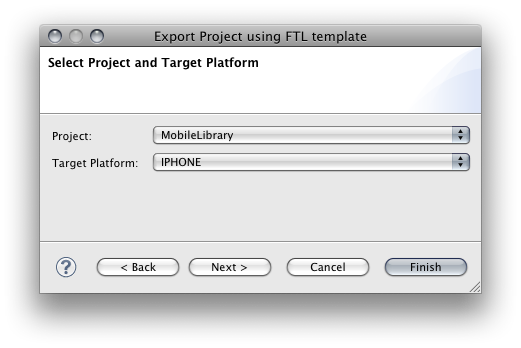
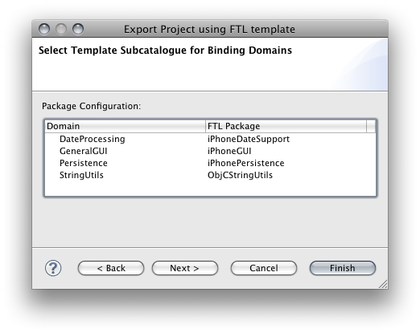
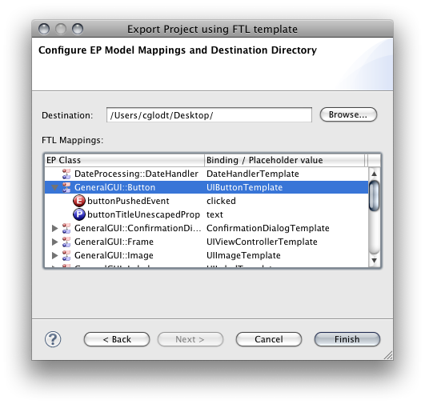
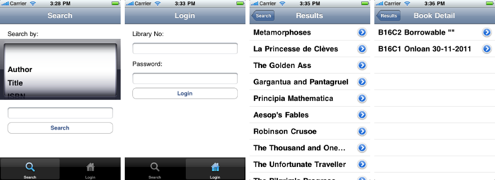

The Mobile Library Experiment
To illustrate our approach to code generation in EP based on templates, supporting the generation of code for various platforms from the same EP model, and to provide an experiment in model-centric model-driven development, we devised the Mobile Library experiment. This builds an EP model of a mobile library application, designed to run on mobile devices, and then generates code for the Android and iPhone platforms from this EP model.
This page gives information on how to run this experiment. In particular, we show how to:
- Import the MobileLibrary EP model into Democles; and
- generate mobile applications for both the Android and iPhone platforms from the EP model.
- Each platform has a catalogue of FTL templates;
- the applications are generated by instantiating templates from the platform's FTL catalogue.
Importing the Example Project
Having installed Democles, download the MobileLibrary example:
Import it into your workspace by choosing File→Import..., then selecting the General→Existing Project into Workspace option. After selecting the downloaded project archive and clicking Finish, the project will be available in the workspace.
Pre-generated Sources
We make pre-generated sources of this example project available for the benefit of those that want to try out the application or that want to see the generated ObjC or Java source code, without having to install Democles:
- MobileLibrary-android.zip: A zipped Eclipse project containing generated Android code for the MobileLibrary application.
- MobileLibrary-iPhone.zip: A zipped Xcode project containing generated iPhone/iOS code for the MobileLibrary application.
The MobileLibrary
The MobileLibrary application is a proof-of-concept mobile application that allows searching a virtual library. Using FTL-based code generation, it can be run on two popular mobile platforms:
- Android (tested versions: 2.3, 3.2)
- iPhone (tested version: iPhone Simulator 3.1.3)
Running the Android version
Prerequisites
In order to be able to test the generated Android application,
- the Android SDK must be installed,
- the SDK Platform Android 2.2, API 8 (latest revision) must be installed, and
- an emulator image using the "Android 2.2 API Level 8" target must be created, or a compatible physical Android device must be connected in debugging mode.
Generating code and running it
After the example project has been imported, follow these steps:
Open the context menu of the MobileLibrary project and choose Export.... Then choose Other→Democles Project using FTL. Click Next.
Make sure the MobileLibrary project is chosen, and the ANDROID target platform is selected:

Click Next.
Observe that for each Domain marked as a "Binding Domain", a corresponding template subcatalogue has been selected:

Concepts in an EP Domain can only be mapped to implementations in their selected template subcatalogue. Click Next to proceed.
The next wizard page shows the mapping of EP model concepts to template catalogue concepts:

A working configuration is included with the example project. Choose a destination folder for the generated code, then click Finish.
Note: The most convenient option is to choose your Eclipse workspace as the output folder, in which case you won't need to import the project in the next step.
Import the generated project into the workspace of an Eclipse installation configured with a working ADT (Android Development Tools) plugin and Android SDK using the File→Import...→Existing Projects into workspace wizard.
Run the imported project by choosing Run As→Android Application from its context menu. The application's screens look as follows:

Running the iPhone version
Prerequisites
In order to run the generated iPhone application, Xcode must be installed.
Generating code and running it
After the example project has been imported, follow these steps:
Open the context menu of the MobileLibrary project and choose Export.... Then choose Other→Democles Project using FTL. Click Next.
Make sure the MobileLibrary project is chosen, and the IPHONE target platform is selected:

Click Next.
Observe that for each Domain marked as a "Binding Domain", a corresponding template subcatalogue has been selected:

Concepts in an EP Domain can only be mapped to implementations in their selected template subcatalogue. Click Next to proceed.
The next wizard page shows the mapping of EP model concepts to template catalogue concepts:

A working configuration is included with the example project. Choose a destination folder for the generated code, then click Finish.
Open MobileLibrary.xcodeproj in the generated Xcode project on a system that has the iPhone SDK and Xcode installed.
Choose Project→Set Active SDK→iPhone Simulator 3.x in Xcode to set the used iPhone SDK version to one that is available on your system.
Run the imported project by clicking Build and Go in Xcode's toolbar. The application's screens look as follows:
